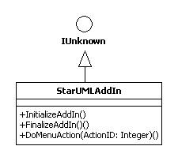
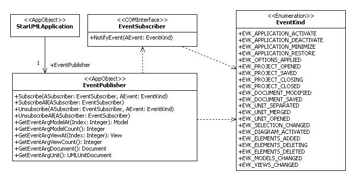
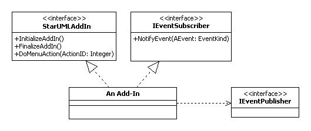

As discussed in 'Chapter 3. Hello world Example' simple Script codes can be defined to add new functionalities to StarUML™. However, to facilitate more complex and useful functionalities, it is better to use a program development environment that supports COM objects. For implementing StarUML™ Add-In COM Objects, it does not matter whether Delphi, Visual Basic or any other programming environment is used, as long as it supports COM technology.
The most important point about implementing StarUML™ Add-In COM Objects is that the IStarUMLAddIn interface defined by StarUML™ must be used.

As illustrated above, the IStarUMLAddIn interface inherits IUnknown and
defines the three additional interface methods: InitializeAddIn(),
FinalizeAddIn(), and DoMenuAction().
The methods to be defined for implementing the IStarUMLAddIn interface are as follows.
| Method | Description |
|---|---|
| InitializeAddIn() | The InitializeAddIn() method is used by the StarUMLApplication object to initialize each Add-In COM Object when it is created. As will be discussed in below section this is used to define the actions required for initialization of an Add-In COM Object such as event subscription registration. |
| FinalizeAddIn() | The FinalizeAddIn() method is called by the StarUMLApplication object just before disconnecting reference from an Add-In COM Object. As will be discussed in below section this is used to define the actions required before terminating an Add-In COM Object such as event subscription removal. |
| DoMenuAction(ActionID: Integer) | As seen in 'Chapter 8. Extending Menu' the DoMenuAction() method is called when the user selects an extension menu item defined by each Add-In. The 'actionId' value of each menu item defined by the menu extension file is passed on as an argument. |
The following is a simple example of an StarUML™ Add-In COM Object implementing the IStarUMLAddIn interface. This is written in the Delphi Pascal syntax.
type
AddInExample = class(TComObject, IStarUMLAddIn)
private
StarUMLApp: IStarUMLApplication;
protected
function InitializeAddIn: HResult; stdcall;
function FinalizeAddIn: HResult; stdcall;
function DoMenuAction(ActionID: Integer): HResult; stdcall;
...
public
procedure Initialize; override;
destructor Destroy; override;
...
end;
...
implementation
procedure AddInExample.Initialize;
begin
inherited;
StarUMLApp := CreateOleObject('StarUML.StarUMLApplication') as IStarUMLApplication;
...
end;
destructor AddInExample.Destroy;
begin
...
StarUMLApp := nil;
inherited;
end;
function AddInExample.InitializeAddIn: HResult;
begin
...
Result := S_OK;
end;
function AddInExample.FinalizeAddIn: HResult;
begin
...
Result := S_OK;
end;
function AddInExample.DoMenuAction(ActionID: Integer): HResult; stdcall;
begin
Result := S_OK;
...
end;
Add-In Description file(*.aid) is XML based text file. All add-Ins plug-ined in StarUML must offer one add-in description file. StarUML registers Add-In object at system registry and initializes the Add-In object and menu extension file associated with it on the reference of add-in description file context.
Note: Add-In description file must have *.aid extension file name and placed in the subdirectory of StarUML module directory(<install-dir>\modules).
Add-In description files follow the XML document conventions, and user-defined menu items are contained within the 'ADDIN' element.
<?xml version="1.0" encoding="..."?>
<ADDIN>
<NAME>...</NAME>
<DISPLAYNAME>...</DISPLAYNAME>
<COMOBJ>...</COMOBJ>
<FILENAME>...</FILENAME>
<COMPANY>...</COMPANY>
<COPYRIGHT>...</COPYRIGHT>
<HELPFILE>...</HELPFILE>
<ICONFILE>...</ICONFILE>
<ISACTIVE>...</ISACTIVE>
<MENUFILE>...</MENUFILE>
<VERSION>...</VERSION>
<MODULES>
<MODULEFILENAME>...</MODULEFILENAME>
</MODULES>
</ADDIN>
To make an add-in description file to be recognized automatically by StarUML, must place the file in the subdirectory of StarUML module directory(<install-dir>\modules). StarUML searches and reads all add-in description files in the module directory and registers them at the program automatically when StarUML is initializing. If add-in description file is invalid or it's extension file name is not .aid, StarUML will not read the add-in description file and ignore it. It is recommended that make a subdirectory in the StarUML module directory and place the add-in description file in there to avoid modules being out of order.
Note: Delete the add-in description file from the StarUML module directory(<install-dir>\modules) not to use the add-in any more.
StarUML supports setup options to adjust environment and detail functions of StarUML. Options are necessary not to StarUML application self but also add-ins supplies by third-party vendors. StarUML option extension enables Add-Ins to equip option configuring function without additional implementation. For using option extension, Add-In developer just defines option items with text file and places it in the Add-In directory. These option definitions are loaded on the program in initializing and displayed on option dialog. Add-In developer can save their time and efforts for implementing Add-In, and provide consistent user interface to users.
Follow the steps below to support setup options in Add-In.
StarUML constructs the option schema hierarchically as follows to manage many option items that defined in the application and add-ins in integrative.
Option schema file to define option items is XML based text file which extension file name is *.opt. The option schema contents are contained within the OPTIONSCHEMA element, and there must not be any errors in syntax or contents.
<?xml version=¡±1.0¡± encoding=¡±...¡± ?>
<OPTIONSCHEMA id="...">
<HEADER>
...
</HEADER>
<BODY>
...
</BODY>
</OPTIONSCHEMA>
The HEADER section of an option schema document contains general information for the option schema such as the option schema title and description. Structure of the header section is as follows.
<HEADER>
<CAPTION>...</CAPTION>
<DESCRIPTION>...</DESCRIPTION>
</HEADER>
The BODY section of an option schema document contains definition of all option items hierarchically.
<BODY>
<OPTIONCATEGORY>
<CAPTION>...</CAPTION>
<DESCRIPTION>...</DESCRIPTION>
<OPTIONCLASSIFICATION>
<CAPTION>...</CAPTION>
<DESCRIPTION>...</DESCRIPTION>
<OPTIONITEM>
...
</OPTIONITEM>
...
</OPTIONCLASSIFICATION>
...
</OPTIONCATEGORY>
...
</BODY>
OPTIONCLASSIFICATION element can contain a number of option item definitions. Option item type are defined as several types such as integer, real, boolean, enumeration and so on. Option dialog supports information for inputting value or restricts value according to option item type.
Available types of option item are as follows.
| Option item type | XML element name | Input in the option dialog |
|---|---|---|
| Integer | OPTIONITEM-INTEGER | Input only integer value. |
| Real | OPTIONITEM-REAL | Input only real number. |
| String | OPTIONITEM-STRING | Input only string. |
| Boolean | OPTIONITEM-BOOLEAN | Input true or false with check box. |
| Text | OPTIONITEM-TEXT | Input multiple line of text in pop-up text box. |
| Enumeration | OPTIONITEM-ENUMERATION | Select one of items that defined with OPTION-ENUMERATIONITEM in combo box. |
| Font name | OPTIONITEM-FONTNAME | Select one of font names installed in the system. |
| File name | OPTIONITEM-FILENAME | Input file name or select the file in the open file dialog. |
| Path name | OPTIONITEM-PATHNAME | Input directory name or select the directory in the open directory dialog. |
| Color | OPTIONITEM-COLOR | Select a color in the color combo box or select the color in the color dialog. |
| Range | OPTIONITEM-RANGE | Input an integer value within specified range. Can change the value as amount of specified step with spin button. |
The following represents format of option item definitions that belongs to OPTIONCLASSIFICATION in the option schema file.
<OPTIONCLASSIFICATION>
<OPTIONITEM-INTEGER key="...">
<CAPTION>...</CAPTION>
<DESCRIPTION>...</DESCRIPTION>
<DEFAULTVALUE>...</DEFAULTVALUE>
</OPTIONITEM-INTEGER>
<OPTIONITEM-REAL key="...">
<CAPTION>...</CAPTION>
<DESCRIPTION>...</DESCRIPTION>
<DEFAULTVALUE>...</DEFAULTVALUE>
</OPTIONITEM-REAL>
<OPTIONITEM-STRING key="...">
<CAPTION>...</CAPTION>
<DESCRIPTION>...</DESCRIPTION>
<DEFAULTVALUE>...</DEFAULTVALUE>
</OPTIONITEM-STRING>
<OPTIONITEM-BOOLEAN key="...">
<CAPTION>...</CAPTION>
<DESCRIPTION>...</DESCRIPTION>
<DEFAULTVALUE>...</DEFAULTVALUE>
</OPTIONITEM-BOOLEAN>
<OPTIONITEM-TEXT key="...">
<CAPTION>...</CAPTION>
<DESCRIPTION>...</DESCRIPTION>
<DEFAULTVALUE>...</DEFAULTVALUE>
</OPTIONITEM-TEXT>
<OPTIONITEM-ENUMERATION key="...">
<CAPTION>...</CAPTION>
<DESCRIPTION>...</DESCRIPTION>
<DEFAULTVALUE>...</DEFAULTVALUE>
<ENUMERATIONITEM>...</ENUMERATIONITEM>
...
</OPTIONITEM-ENUMERATION>
<OPTIONITEM-FONTNAME key="...">
<CAPTION>...</CAPTION>
<DESCRIPTION>...</DESCRIPTION>
<DEFAULTVALUE>...</DEFAULTVALUE>
</OPTIONITEM-FONTNAME>
<OPTIONITEM-FILENAME key="...">
<CAPTION>...</CAPTION>
<DESCRIPTION>...</DESCRIPTION>
<DEFAULTVALUE>...</DEFAULTVALUE>
</OPTIONITEM-FILENAME>
<OPTIONITEM-PATHNAME key="...">
<CAPTION>...</CAPTION>
<DESCRIPTION>...</DESCRIPTION>
<DEFAULTVALUE>...</DEFAULTVALUE>
</OPTIONITEM-PATHNAME>
<OPTIONITEM-COLOR key="...">
<CAPTION>...</CAPTION>
<DESCRIPTION>...</DESCRIPTION>
<DEFAULTVALUE>...</DEFAULTVALUE>
</OPTIONITEM-COLOR>
<OPTIONITEM-RANGE key="...">
<CAPTION>...</CAPTION>
<DESCRIPTION>...</DESCRIPTION>
<DEFAULTVALUE>...</DEFAULTVALUE>
<MINVALUE>...</MINVALUE>
<MAXVALUE>...</MAXVALUE>
<STEP>...</STEP>
</OPTIONITEM-RANGE>
...
</OPTIONITEMCLASSIFICATION>
|
Option item type |
Range of valid values |
||||||||
|---|---|---|---|---|---|---|---|---|---|
| OPTIONITEM-INTEGER | Integer in -2147483648 ~ 2147483647 | ||||||||
| OPTIONITEM-REAL | Integer or floating-point value | ||||||||
| OPTIONITEM-STRING | String value | ||||||||
| OPTIONITEM-BOOLEAN | True or False | ||||||||
| OPTIONITEM-TEXT | String value | ||||||||
| OPTIONITEM-ENUMERATION | String defined in ENUMERATIONITEM element | ||||||||
| OPTIONITEM-FONTNAME | Font name. e.g. Tahoma | ||||||||
| OPTIONITEM-FILENAME | File name with full path or empty string e.g. C:\My Document\Default.xml |
||||||||
| OPTIONITEM-PATHNAME | Valid path name or empty string e.g. C:\My Document |
||||||||
| OPTIONITEM-COLOR | Formatted string as follows ${W}{B}{G}{R} ¡¡
i.e. $00FF0000 , $00A0A0A0, $00FF00FF |
||||||||
| OPTIONITEM-RANGE | Integer value between minimum value specified in MINVALUE and maximum value specified in MAXVALUE |
The following example is the part of option schema file for StarUML.
<?xml version="1.0" encoding="UTF-8" ?>
<OPTIONSCHEMA id="ENVIRONMENT">
<HEADER>
<CAPTION>Environment</CAPTION>
<DESCRIPTION> </DESCRIPTION>
</HEADER>
<BODY>
<OPTIONCATEGORY>
<CAPTION>General</CAPTION>
<DESCRIPTION>General Configuration is a group of the basic and general option items for the program. This category includes the [General], [Browser], [Collection Editor] and [Web] subcategories.</DESCRIPTION>
<OPTIONCLASSIFICATION>
<CAPTION>General</CAPTION>
<DESCRIPTION></DESCRIPTION>
<OPTIONITEM-RANGE key="UNDO_LEVEL">
<CAPTION>Max. number of undo actions</CAPTION>
<DESCRIPTION>Specifies the maximum number of actions for undo and redo.</DESCRIPTION>
<DEFAULTVALUE>30</DEFAULTVALUE>
<MINVALUE>1</MINVALUE>
<MAXVALUE>100</MAXVALUE>
<STEP>1</STEP>
</OPTIONITEM-RANGE>
<OPTIONITEM-BOOLEAN key="CREATE_BACKUP">
<CAPTION>Create backup files</CAPTION>
<DESCRIPTION>Specifies whether to create backup files when saving changes.</DESCRIPTION>
<DEFAULTVALUE>True</DEFAULTVALUE>
</OPTIONITEM-BOOLEAN>
</OPTIONCLASSIFICATION>
</OPTIONCATEGORY>
</BODY>
</OPTIONSCHEMA>
To make a option schema to be recognized automatically by StarUML, must place the file in the subdirectory of StarUML module directory(<install-dir>\modules). StarUML searches and reads all option schema files in the module directory and registers them at the program automatically when StarUML is initializing. If option schema file is invalid or it's extension file name is not .opt, StarUML will not read the option schema file and ignore it. It is recommended that make a subdirectory in the StarUML module directory and place the add-in description file in there to avoid modules being out of order.
Note: Delete option schema file from the StarUML module directory(<install-dir>\modules) not to use the option extension any more.
You can access the option values that user changed in option dialog by using
COM interface of StarUML.
GetOptionValue() of IStarUMLApplication returns option value
depends on SchemaID and Key inputted as variant.
The method usage is as follows.
IStarUMLApplication.GetOptionValue(SchemaID: String, Key: String): Variant
Use the Variant typed return value of GetOptionValue() by casting it according to the type of each option item. You can read the value directly without additional type casting in script languages such as JScript and VBScript.
The following is JScript example that reads "UNDO_LEVEL" option value defined in the StarUML environment option schema and output it to message box.
var app = new ActiveXObject("StarUML.StarUMLApplication");
var undoLevel = app.GetOptionValue("ENVIRONMENT", "UNDO_LEVEL");
WScript.Echo("Max. number of undo actions : " + undoLevel);
StarUML propagates events that occurs in using the program to Add-ins that implement IEventSubscriber interface. If user changes option values in option dialog, Application invokes event handler- NotifyEvent()- of Add-ins that implement IEventSubscriber. If you want to apply option values promptly to the Add-in when user changes the option values, implement IEventSubscriber interface and NotifiyEvent() to read the option values by using IStarUMLApplication.GetOptionValue() method in case of EVK_OPTIONS_APPLIED event. Add-Ins that use script such as VBScript and JSCript cannot apply option values to the Add-in becase they can't implement IEventSubscriber interface.
For the details of event handling, it will be featured in the next section.
An Add-In Object that implements the IEventSubscriber interface can subscribe to various internal events of the StarUML™ application. Whenever an internal event occurs, the StarUML™ application calls the NotifyEvent method of the registered IEventSubscriber type objects.
The class diagram below illustrates the organization of the external API
interfaces related to event subscription.

As illustrated above, the EventKind enumeration defines the kinds of internal events of the StarUML™ application that can be subscribed by Add-In objects that implement the IEventSubscriber interface. The table below describes each literal of the EventKind enumeration.
| Event Kind (literal) | Integer Value | Event Description |
|---|---|---|
| EVK_APPLICATION_ACTIVATE | 0 | Occurs when the StarUML™ application window is activated. |
| EVK_APPLICATION_DEACTIVATE | 1 | Occurs when the StarUML™ application window is deactivated. |
| EVK_APPLICATION_MINIMIZE | 2 | Occurs when the StarUML™ application window is minimized. |
| EVK_APPLICATION_RESTORE | 3 | Occurs when the minimized StarUML™ application window is restored to the previous size. |
| EVK_OPTIONS_APPLIED | 4 | Occurs when an option value is modified. |
| EVK_PROJECT_OPENED | 5 | Occurs when a project element is created or a project file is opened. |
| EVK_PROJECT_SAVED | 6 | Occurs whenever a project is saved. |
| EVK_PROJECT_CLOSING | 7 | Occurs when "Close Project" is selected. |
| EVK_PROJECT_CLOSED | 8 | Occurs when a project is closed. |
| EVK_DOCUMENT_MODIFIED | 9 | Occurs when a document (project or unit) is modified. |
| EVK_DOCUMENT_SAVED | 10 | Occurs when a document (project or unit) is saved. |
| EVK_UNIT_SEPARATED | 11 | Occurs when a unit element is separated. |
| EVK_UNIT_MERGED | 12 | Occurs when a separated unit element is merged. |
| EVK_UNIT_OPENED | 13 | Occurs when a unit is opened. |
| EVK_SELECTION_CHANGED | 14 | Occurs when the modeling element selection is changed. |
| EVK_DIAGRAM_ACTIVATED | 15 | Occurs when a diagram is opened. |
| EVK_ELEMENTS_ADDED | 16 | Occurs whenever a new modeling element is created. |
| EVK_ELEMENTS_DELETING | 17 | Occurs when deleting a modeling element. |
| EVK_ELEMENTS_DELETED | 18 | Occurs when a modeling element is deleted. |
| EVK_MODELS_CHANGED | 19 | Occurs when a model element property value is modified. |
| EVK_VIEWS_CHANGED | 20 | Occurs when a view element property value is modified. |
In order for an Add-In to subscribe to the StarUML™ application events, it
needs to implement the IEventSubscriber interface in addition to the
IStarUMLAddIn interface, which is the common interface for all StarUML™
Add-Ins.

The following example shows the class definition of an StarUML™ Add-In object that implements the IStarUMLAddIn interface and the IEventSubscriber interface. This example is written in Delphi Pascal.
type
AddInExample = class(TComObject, IStarUMLAddIn, IEventSubscriber)
private
StarUMLApp: IStarUMLApplication;
EventPub: IEventPublisher;
protected
function InitializeAddIn: HResult; stdcall;
function FinalizeAddIn: HResult; stdcall;
function DoMenuAction(ActionID: Integer): HResult; stdcall;
function NotifyEvent(AEvent: EventKind): HResult; stdcall;
...
public
procedure Initialize; override;
destructor Destroy; override;
...
end;
In order for an Add-In object, which implements the IEventSubscriber interface, to subscribe to events, the event subscription must be registered. Event subscription registration and removal can be done through the IEventPublisher type object. Reference to the IEventPublisher type object can be obtained through the IStarUMLApplication element. The following Delphi Pascal example shows obtaining reference to IStarUMLApplication and the IEventPublisher type object.
implementation
procedure AddInExample.Initialize;
begin
inherited;
StarUMLApp := CreateOleObject('StarUML.StarUMLApplication') as IStarUMLApplication;
EventPub := StarUMLApp.EventPublisher;
end;
destructor AddInExample.Destroy;
begin
EventPub := nil;
StarUMLApp := nil;
inherited;
end;
The IEventPublisher interface provides the following methods for registration and removal of event subscription. The "ASubscriber" argument for each method represents the actual Add-In object that implements the IEventSubscriber interface.
| Method | Description |
|---|---|
| Subscribe(ASubscriber: IEventSubscriber; AEvent: EventKind) | Registers subscription to an event specified by the AEvent argument. |
| SubscribeAll(ASubscriber: IEventSubscriber) | Registers subscription to all events. |
| Unsubscribe(ASubscriber: IEventSubscriber; AEvent: EventKind) | Removes subscription to an event specified by the AEvent argument. |
| UnsubscribeAll(ASubscriber: IEventSubscriber) | Removes subscription to all events. |
Use the Subscribe method if an Add-In object needs to subscribe to certain events only. For instance, for subscribing to two specific events, call the Subscribe method for each event. Use the SubscribeAll method to subscribe to all events. In general, the Subscribe and SubscribeAll methods are called by the IPlasticAddIn.InitializeAddIn method.
If an Add-In object no longer needs to subscribe to the registered events (e.g. when the object is terminated), all the events registered must be unregistered. Use the Unsubscribe method if the subscription was registered by the Subscribe method, and use the UnsubscribeAll method if the subscription was registered by the SubscribeAll method. In general, the Unsubscribe and SubscribeAll methods are called by the IStarUMLAddIn.FinalizeAddIn method.
The following example shows registration and removal of subscription to the EVK_ELEMENTS_ADDED and EVK_ELEMENTS_DELETED events.
implementation
function AddInExample.InitializeAddIn: HResult;
begin
EventPub.Subscribe(Self, EVK_ELEMENTS_ADDED);
EventPub.Subscribe(Self, EVK_ELEMENTS_DELETED);
...
Result := S_OK;
end;
function AddInExample.FinalizeAddIn: HResult;
begin
EventPub.Unsubscribe(Self, EVK_ELEMENTS_ADDED);
EventPub.Unsubscribe(Self, EVK_ELEMENTS_DELETED);
...
Result := S_OK;
end;
When an event occurs, it is necessary to acquire the related arguments. For instance, when an event related to the creation of a modeling element occurs (EVK_ELEMENTS_ADDED), it is necessary to identify which modeling element is created. The IEventPublisher interface provides the following methods in respect of event arguments.
| Method | Description |
|---|---|
| GetEventArgModelCount (): Integer | Returns the model element count related to the event. |
| GetEventArgModelAt(Index: Integer): IModel | Returns reference to the (index)th model element related to the event. |
| GetEventArgViewCount: Integer | Returns the view element count related to the event. |
| GetEventArgViewAt(Index: Integer): IView | Returns reference to the (index)th view element related to the event. |
| GetEventArgDocument: IDocument | Returns reference to the document element related to the event. |
| GetEventArgUnit: IUMLUnitDocument | Returns reference to the unit element related to the event. |
When a subscribed event occurs, the Add-In needs to execute appropriate processes. Whenever a subscribed event occurs, the StarUML™ application calls the NotifyEvent method of the respective Add-In and passes the event kind as an argument. The event kind is passed as an argument for the NotifyEvent method because it is possible for an Add-In to subscribe to more than one event. Each Add-In needs to implements the NotifyEvent method to arrive at a logic to execute various processes according to the event kinds.
The following example shows implementation of the NotifyEvent method. This example verifies the semantic validity of the element connections when the association element (UMLAssociation) or the generalization element (UMLGeneralization) is created in the StarUML™ application. (This example is a continuation of the examples above. For definition of the Add-In object, see the examples above.)
implementation
function AddInExample.NotifyEvent(AEvent: EventKind): HResult;
var
M: IModel;
Assoc: IUMLAssociation;
Gen: IUMLGeneralization;
End1, End2: IUMLClassifier;
begin
if AEvent = EVK_ELEMENTS_ADDED then
begin
if EventPub.GetEventArgModelCount = 1 then
begin
M := EventPub.GetEventArgModelAt(0);
// Association
if M.QueryInterface(IUMLAssociation, Assoc) = S_OK then
begin
End1 := Assoc.GetConnectionAt(0).Participant;
End2 := Assoc.GetConnectionAt(1).Participant
if End1.IsKindOf('UMLPackage') or End2.IsKindOf('UMLPackage') then
ShowMessage('Packages cannot have associations.')
...
end;
// Generalization
if M.QueryInterface(IUMLGeneralization, Gen) = S_OK then
begin
if Gen.Child.IsRoot then
ShowMessage('Root elements cannot have parent elements.');
if Gen.Parent.IsLeaf then
ShowMessage('Leaf elements cannot have child elements.');
end;
end;
end;
Result := S_OK;
end;
¡¡